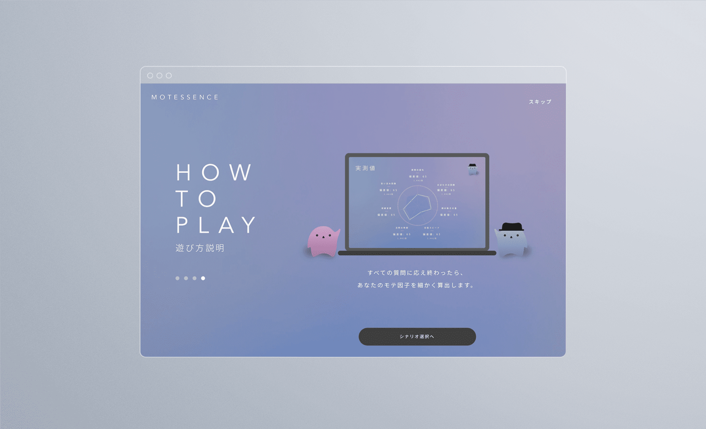

自分らしい魅力を探るモテ因子判定アプリ
美やジェンダーへの人々の意識が変わりつつある中で「モテ」の定義も刷新される時代が来ました。NTTメディアインテリジェンス研究所が開発するMEDIA-GNOSISは、人の挙動や言動をリアルタイムで解析することで人それぞれの「らしさ」を見抜く人間観察AI。その技術価値を世に知らせるため、人それぞれのモテ因子を発見するデモアプリのコンセプトデザインとUI/UXのグランドデザインを行いました。
社会性のあるアプリコンセプトを軸にPR活動を行うことで、ペイド広告に頼らず5つのニュース番組出演や、様々なYouTuberとのコラボを実現。3,000近いTweetが観測され、モテへの考え方への共感や、NTTの技術力への称賛が寄せられました。